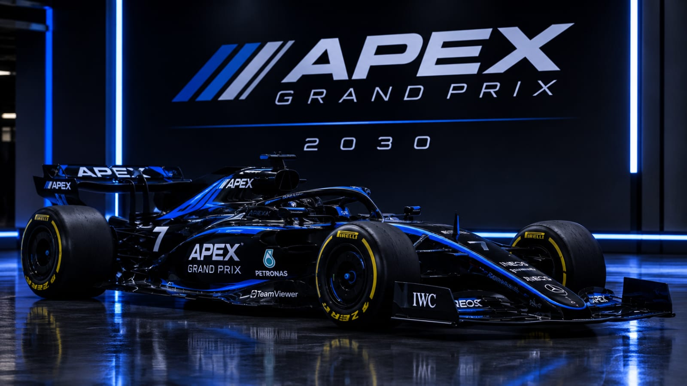
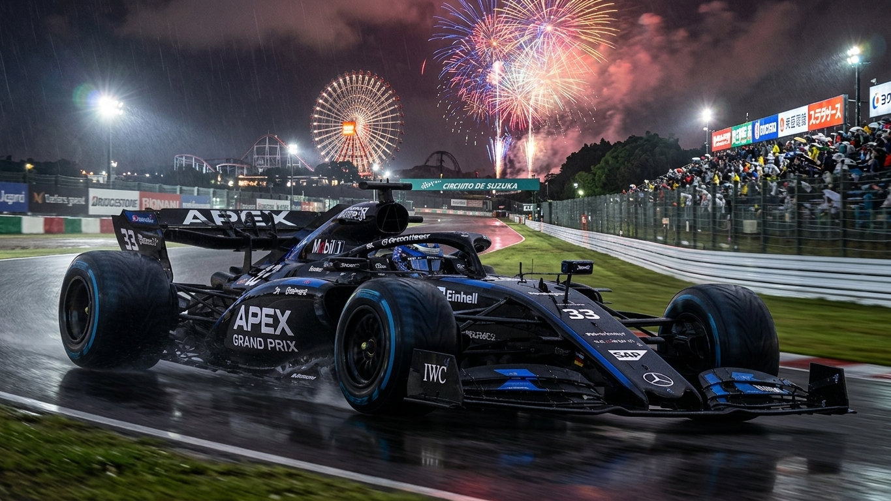
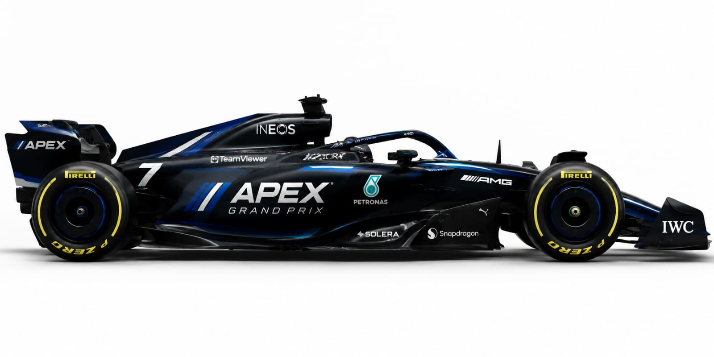
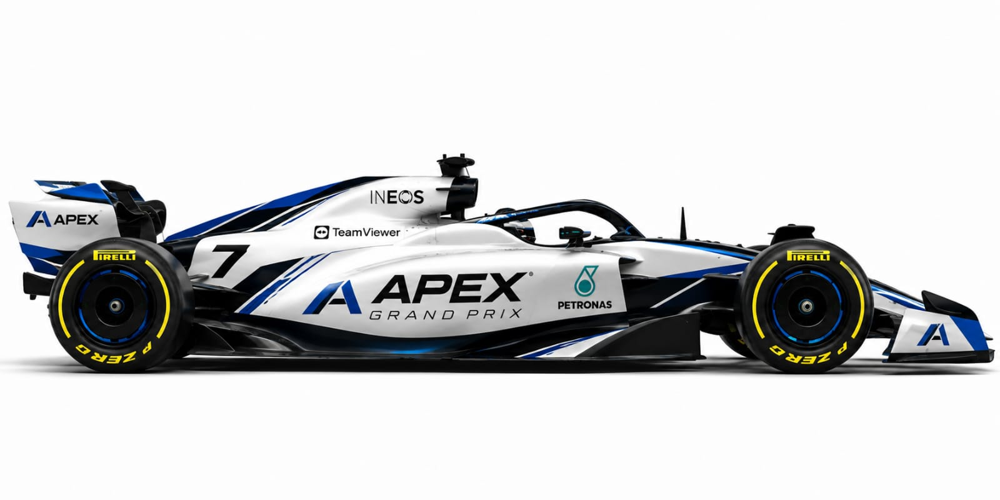

LA HISTORIA DE APEX
2030 - El nacimiento
Apex llegó a la Fórmula 1 como una escudería nueva,
con poco presupuesto y pocas expectativas.
Su primer piloto fue Adrián Valente, un joven español
de apenas 19 años.

2031-2032 - La revolución
El equipo comenzó a contratar ingenieros y desarrollar
nuevas tecnologías. En 2032 consiguió su primera
victoria gracias a Adrián Valente en Japón.

2033 - Una nueva estrella
Oliver Hayes llegó a la escudería y formó una dupla
extraordinaria con Valente. Apex terminó tercero
en el campeonato de constructores.

2034 - El primer campeonato
Gracias a su revolucionario sistema Active Venturi,
Apex consiguió su primer campeonato de constructores
y Adrián Valente se convirtió en campeón mundial.

2035 - El dominio
Apex volvió a ganar ambos campeonatos.
Valente consiguió su segundo título mundial y Hayes
terminó segundo en el campeonato de pilotos.